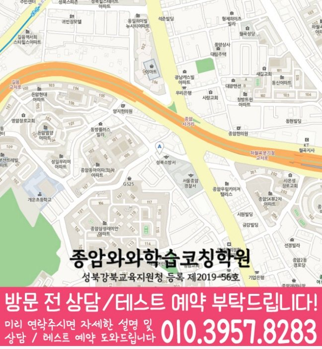

와와학습코칭센터 종암점
서울 성북구 종암로27길 13 도원프라자 501
HIGH SCHOOL MATH
종암동에서 안내하는 와와학습코칭센터 종암점의 방문 정보와 고1·고2·고3 기재 여부를 확인하고, 필요한 학년의 학습 점검 안내로 이동해 보세요.
서울 성북구 종암로27길 13 도원프라자 501
성북강북교육지원청 등록 제2019-56호
통합 상담 전화 010-6839-8283 · 문의할 때 와와학습코칭센터 종암점과 학생의 학년을 말씀해 주세요.
도원프라자 5층입니다. 성북소방서와 GS주유소 사이 길로 들어오면 소방서 옆에 있는 건물로 안내돼 있습니다.
방문 주소: 서울 성북구 종암로27길 13 도원프라자 501
평균 오픈 안내 평일 오후 3시 이후
주말 수업 안내 토요일
안내 자료의 운영 정보입니다. 현재 방문 시간과 과목별 반 편성은 예약할 때 확인해 주세요. 건물 내 상점과 시설 모습은 촬영·안내 시점에 따라 달라질 수 있습니다.


와와학습코칭센터 종암점 방문을 문의할 때 학생의 학년과 희망 과목을 알려 주세요. 통합 상담 010-6839-8283
종암동 안내에서 연결되는 센터는 와와학습코칭센터 종암점입니다. 제공 자료에서 이 센터로 연결되는 동네는 2곳입니다. 이 가운데 길음동도 같은 센터를 안내합니다.
동네 안내 수는 센터 수와 다릅니다. 실제 방문지는 위의 센터 정보에 적힌 주소를 확인하고, 출발할 곳과 희망 방문 시각을 알려 주세요. 검토된 센터 사진과 방문 안내도 함께 확인해 보세요.
학년별로 자료에 기재된 상태를 확인하세요. 기재된 학년도 현재 과목·범위·시간표·반 편성은 상담에서 확인해야 합니다.
자료의 수학 가능 학년 목록에 기재돼 있습니다.
고1 학습 점검·상담 안내자료의 수학 가능 학년 목록에 기재돼 있습니다.
고2 학습 점검·상담 안내자료의 수학 가능 학년 목록에 기재돼 있습니다.
목록은 학교별 전용 반이나 내신 대비 수업 개설을 확정하는 정보가 아닙니다. 시험 범위표, 교과서와 수업 프린트를 준비해 현재 필요한 범위를 다룰 수 있는지 문의해 주세요.
현재 교재와 진도에 맞는 학년별 안내에서 구체적인 학습 예시를 확인해 보세요.
상담에는 재학 학교·학년·수강 과목명, 현재 교재와 풀이가 남아 있는 오답을 준비해 주세요. 학년만으로 배우는 과목이나 시험 범위를 단정하지 않습니다.
종합 안내에서는 방문할 센터와 자료상 가능 학년, 학교 참고 정보를 확인합니다. 고1·고2 학년별 안내에서는 현재 교재에 적용할 학습 점검 예시와 오답 기록 방법을 살펴볼 수 있습니다.
학교 참고 목록은 상담할 때 학교와 시험 자료를 설명하기 위한 정보입니다. 전용 반이나 시험 대비 수업 개설을 뜻하지 않으며, 실제 과목명과 범위표를 알려 주고 별도로 확인해야 합니다.
자료의 학년 목록에 없다는 사실만으로 현재 수강 가능 여부를 단정할 수 없습니다. 원하는 학년과 과목을 먼저 문의해 주세요. 기재된 학년도 현재 시간표·반 편성·정원은 상담에서 확인해야 합니다.
출발할 곳, 희망 요일·시각, 재학 학년과 수강 과목명을 알려 주세요. 센터 정보의 방문 주소를 확인하고, 교습비 자료에 적힌 과목·수업 시간·횟수가 상담 조건과 같은지 대조해 주세요.


와와학습코칭센터 종암점의 위치와 종암동 생활권을 기준으로 고등 수학 상담 정보를 확인합니다. 방문 전 실제 이동 동선과 상담 가능 시간을 함께 확인해 주세요.